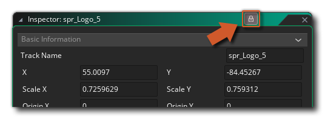

The Inspector Window is a window that shows all the properties associated with a selected element in the IDE. The window will show information about the element being inspected, as well as all the editable properties for that element and permit you to change them as required, updating the asset that is being inspected to match.
You can open multiple Inspector windows at any time, and each one
can be linked to a specific element in the IDE. To ensure that each
time you click an element all open inspectors don't change to show
the new selection, you must first lock the inspector window.
To do this, you would open an inspector, select an IDE element to
inspect, and then click the lock button on the inspector to to lock
it on the element (shown in the image below). Once you have locked
the inspector, you can open another one and then repeat the
process. 
Note that a locked inspector window does not lock the editing of any values for the element being inspected. It simply locks the inspector to an element and you can continue to edit it at any time, even if it's not the focus of the main IDE.